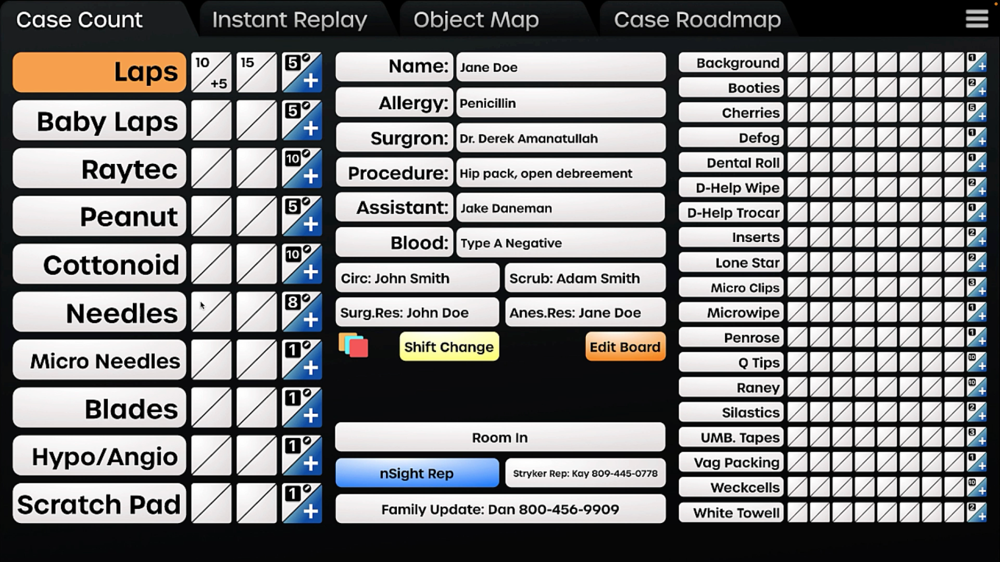
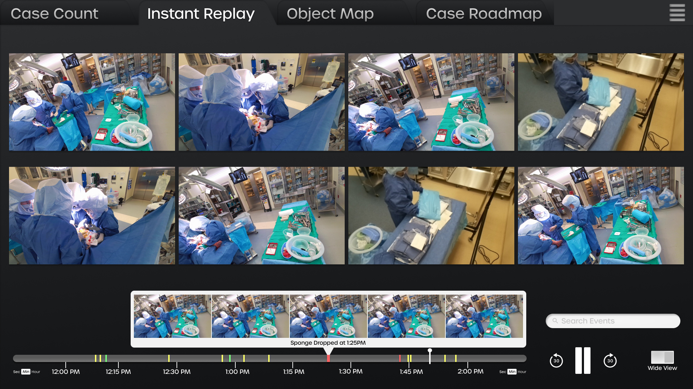
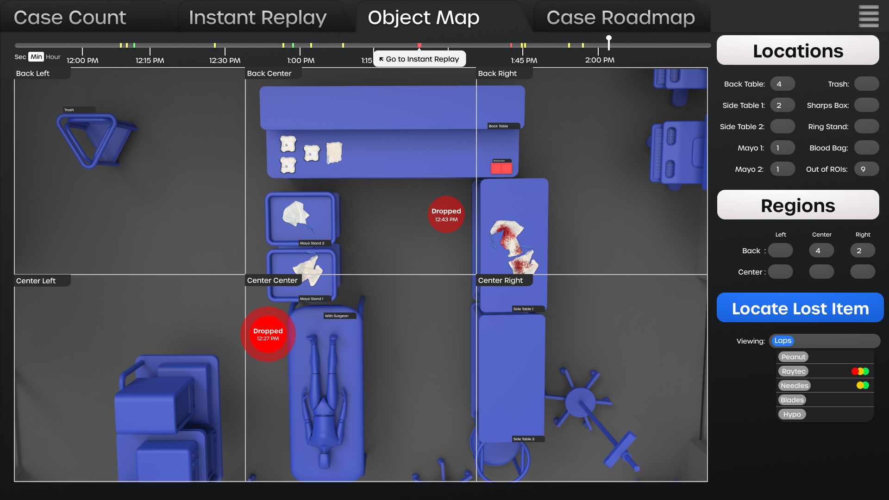
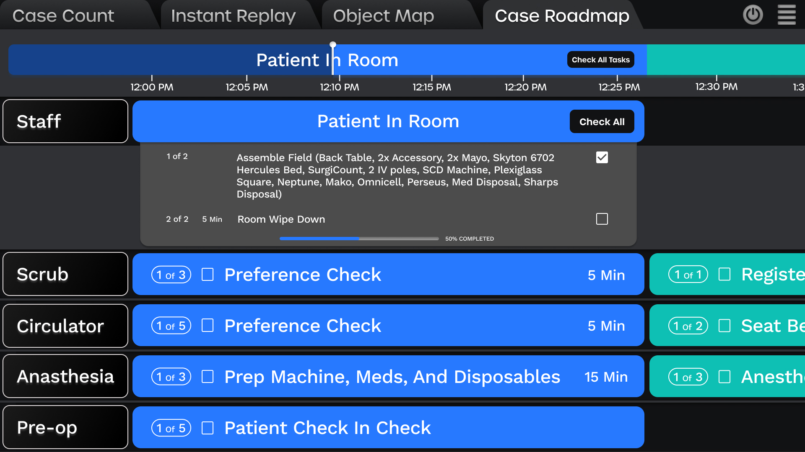
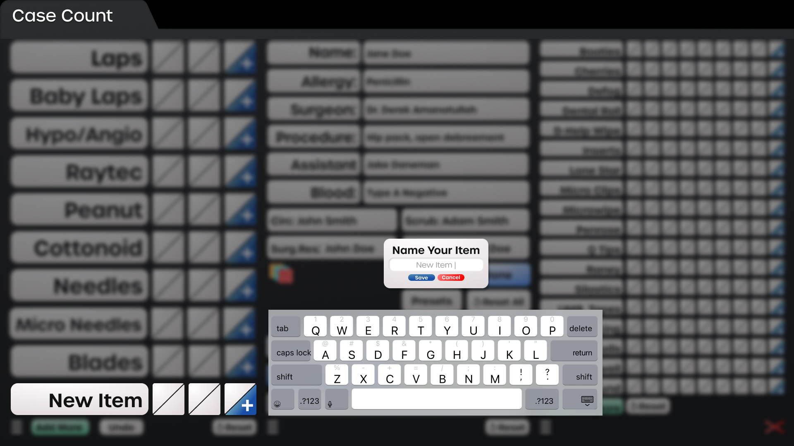
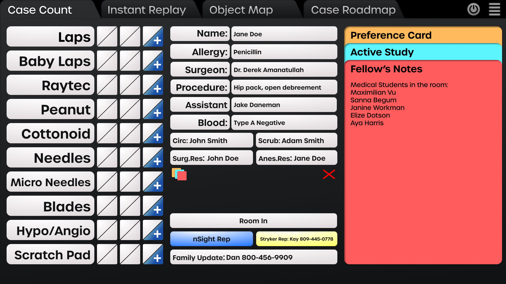

nSight Surgical
Guiding the core interaction principles behind a revolutionary new product leveraging the latest computer vision technologies to increase safety and eciency in the operating room.
I am responsible for the research and development and executing designs on the visual aspect of our platform. Our product allows nurses to track and count surgical objects in the OR.
Visit ↗




